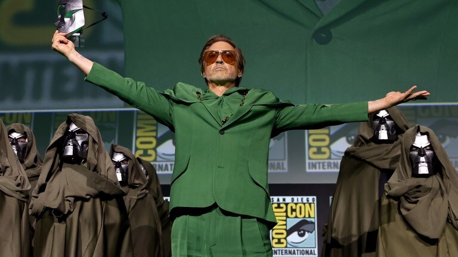
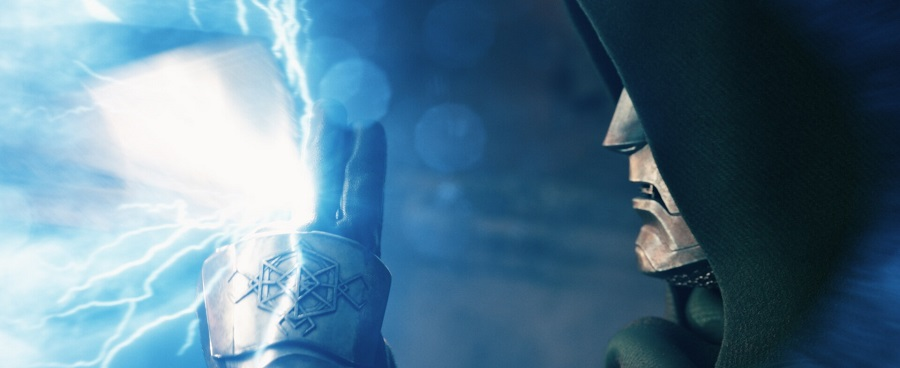
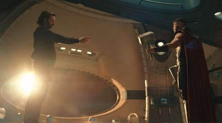
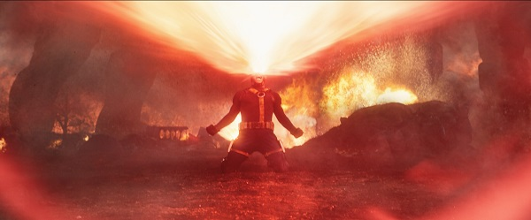
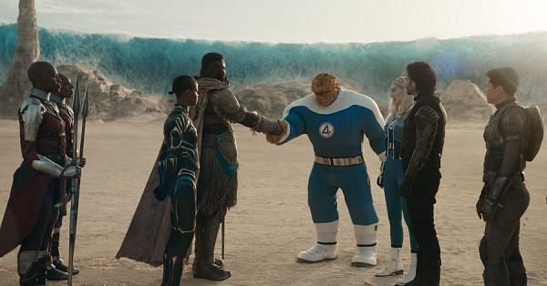
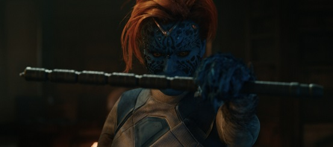

O primeiro trailer completo de Avengers: Doomsday finalmente revelou muito mais sobre o próximo grande evento do Universo Cinematográfico da Marvel.
Depois de meses de teasers, anúncios de elenco e especulações envolvendo o retorno de personagens importantes, a nova prévia coloca Doutor Destino no centro da história.
E o trailer não está apenas preparando uma nova batalha dos Vingadores. Ele apresenta sinais de que diferentes universos estão começando a entrar em colisão.
X-Men, Quarteto Fantástico, Vingadores, Wakanda e outros personagens aparecem no mesmo conflito.
"Avengers: Doomsday pode ser o filme que finalmente transforma o caos do Multiverso em uma única guerra."
O que acontece no trailer de Avengers: Doomsday?
O trailer começa apresentando um cenário muito diferente dos tradicionais filmes dos Vingadores.
A prévia passa rapidamente por ambientes ligados aos X-Men antes de começar a mostrar os efeitos de uma ameaça que parece ultrapassar os limites de uma única realidade.
A palavra mais importante para entender o trailer é Incursão.
🌌 O trailer apresenta:
- Doutor Destino como grande ameaça
- O retorno de Steve Rogers
- Thor enfrentando uma ameaça superior
- Personagens dos X-Men
- O Quarteto Fantástico
- Novos Vingadores
- Conflitos entre diferentes grupos
- Sinais de colapso do Multiverso
Doutor Destino finalmente mostra seu verdadeiro poder

Um dos maiores acontecimentos do trailer é a apresentação de Robert Downey Jr. como Victor Von Doom.
A escolha do ator é naturalmente uma das maiores provocações da Marvel.
Durante mais de uma década, Downey Jr. foi o rosto de Tony Stark, o Homem de Ferro.
Agora, o mesmo ator retorna ao MCU interpretando um dos maiores vilões da Marvel.
"Robert Downey Jr. não está voltando como Tony Stark. Ele está interpretando Doutor Destino."
Essa diferença é fundamental.
Até o momento, o material divulgado apresenta Victor Von Doom como Doutor Destino.
Isso não confirma que Doom seja uma variante de Tony Stark.
Essa é uma das teorias mais populares entre os fãs, mas continua sendo uma teoria enquanto a Marvel não revelar uma conexão oficial.
Por que Doutor Destino é tão importante?
Nos quadrinhos, Victor Von Doom é muito mais do que simplesmente um vilão que quer dominar o mundo.
Ele é um dos personagens mais inteligentes e perigosos do universo Marvel.
Doom combina ciência, tecnologia, estratégia e poderes místicos.
Isso faz dele um adversário completamente diferente dos inimigos que os Vingadores enfrentaram anteriormente.
🦹 Por que Doom é diferente?
- Extremamente inteligente
- Mestre em tecnologia
- Conhecimento de magia
- Grande estrategista
- Conhecimento sobre o Multiverso
- Capacidade de enfrentar grandes heróis
Doutor Destino consegue parar o Stormbreaker

Uma das cenas mais impressionantes da prévia mostra Thor enfrentando Doutor Destino.
O momento chama atenção porque Doom consegue interromper o ataque de Thor e impedir que Stormbreaker continue avançando.
Essa cena serve principalmente para estabelecer uma mensagem: Doom está em outro nível de ameaça.
Thor já enfrentou alguns dos seres mais poderosos do MCU.
Mesmo assim, o trailer apresenta Doom como alguém capaz de enfrentar diretamente um dos Vingadores mais poderosos.
"Se Thor precisa de ajuda para enfrentar Doom, o problema é muito maior do que uma batalha comum."
Steve Rogers está de volta

O momento que provavelmente mais chamou atenção dos fãs acontece no final do trailer.
Steve Rogers, interpretado novamente por Chris Evans, aparece no filme.
E não é apenas uma participação rápida.
O personagem aparece novamente empunhando Mjolnir.
Isso cria imediatamente uma das maiores perguntas do filme: como Steve Rogers voltou?
Como Steve Rogers pode estar jovem novamente?
Em Avengers: Endgame, Steve viaja ao passado para devolver as Joias do Infinito.
Depois disso, ele decide permanecer no passado para viver sua vida com Peggy Carter.
Quando aparece novamente no presente, Steve está idoso.
O Steve Rogers mostrado em Doomsday, entretanto, aparece novamente em sua versão fisicamente jovem.
🛡️ As principais possibilidades
- Steve pode ser uma variante de outra realidade
- Pode ter sido retirado de outro ponto da linha temporal
- O Multiverso pode ter alterado sua história
- A explicação pode estar relacionada às Incursões
O trailer não entrega uma resposta definitiva.
Portanto, qualquer explicação mais específica deve ser tratada como teoria.
Steve Rogers ainda é digno de Mjolnir?
Sim.
A cena deixa claro que Steve continua sendo capaz de empunhar o martelo de Thor.
O detalhe é especialmente importante porque Steve e Thor não dividem uma cena desde Avengers: Endgame.
A reunião dos dois personagens também possui um peso emocional enorme para quem acompanha o MCU desde a primeira geração dos Vingadores.
"Depois de Endgame, Steve Rogers finalmente encontra novamente alguns dos antigos companheiros."
O retorno dos X-Men

Outro elemento fundamental do trailer é a presença dos X-Men.
O início da prévia apresenta Charles Xavier e elementos ligados ao universo dos mutantes.
Isso é importante porque o MCU vinha construindo lentamente a entrada dos mutantes em sua narrativa.
Em Doomsday, diferentes versões do universo Marvel finalmente começam a colidir.
O que são as Incursões?
Para entender Avengers: Doomsday, é necessário entender o conceito de Incursão.
Uma Incursão acontece quando duas realidades diferentes começam a ocupar o mesmo espaço ou entram em rota de colisão.
O resultado pode ser catastrófico.
🌌 Uma Incursão pode significar:
- Colisão entre universos
- Destruição de realidades inteiras
- Bilhões de vidas ameaçadas
- Conflito entre versões diferentes de heróis
- Colapso da estrutura do Multiverso
Esse conceito já havia sido apresentado anteriormente no MCU, especialmente durante Doctor Strange in the Multiverse of Madness.
Agora, parece que as consequências dessas colisões serão muito maiores.
O Quarteto Fantástico também entra na guerra

O Quarteto Fantástico também possui papel importante na história.
Isso cria uma conexão particularmente interessante com Doutor Destino.
Nos quadrinhos, Victor Von Doom possui uma relação histórica extremamente importante com Reed Richards e o Quarteto Fantástico.
Portanto, a presença dos dois lados no mesmo filme pode criar um dos conflitos mais importantes da trama.
Doutor Destino e Reed Richards
Uma das relações mais importantes para entender Doom é sua rivalidade intelectual com Reed Richards.
Os dois personagens são extremamente inteligentes, mas possuem filosofias completamente diferentes.
Reed acredita que problemas podem ser resolvidos através da ciência e colaboração.
Doom acredita que sua própria inteligência e capacidade justificam assumir o controle.
"Reed Richards quer salvar o mundo. Doom acredita que somente ele é capaz de governá-lo."
Thor parece estar assumindo a liderança
Outro detalhe importante do trailer é a posição de Thor dentro do novo grupo de heróis.
O personagem aparece reunindo diferentes grupos para enfrentar uma ameaça que parece impossível de derrotar individualmente.
A fala de Thor deixa claro que os heróis já enfrentaram inimigos extremamente poderosos.
Mas a ameaça atual parece estar em uma escala completamente diferente.
⚡ O discurso de Thor representa:
- União entre diferentes equipes
- Necessidade de deixar antigas rivalidades de lado
- Uma ameaça maior que os conflitos individuais
- Preparação para uma guerra multiversal
Vingadores contra X-Men?

Uma das cenas que mais chamou atenção mostra personagens de diferentes grupos aparentemente entrando em conflito.
O trailer mostra confrontos entre heróis que, em teoria, deveriam estar do mesmo lado.
Um dos exemplos mais curiosos é o confronto envolvendo Gambit e Shang-Chi.
Isso não significa necessariamente que X-Men e Vingadores serão inimigos durante todo o filme.
O mais provável é que o conflito esteja relacionado às diferentes realidades e aos interesses de cada grupo.
Por que os heróis estão lutando entre si?
Existem algumas possibilidades.
Uma delas é que diferentes universos estejam tentando sobreviver às Incursões.
Se duas realidades estiverem destinadas a serem destruídas, seus habitantes podem tentar impedir que o próprio universo seja sacrificado.
Isso cria um dilema interessante: salvar o seu universo pode significar destruir outro.
O trailer confirma Secret Wars?
O filme está diretamente ligado ao próximo grande capítulo da Saga do Multiverso: Avengers: Secret Wars.
Doomsday funciona como uma preparação para um conflito ainda maior.
Se o Multiverso realmente estiver entrando em colapso, a história pode caminhar para uma situação em que diferentes realidades precisem ser reorganizadas.
"Doomsday pode não ser o fim do Multiverso. Pode ser o começo da guerra que levará até Secret Wars."
Robert Downey Jr. é realmente uma variante de Tony Stark?
Essa é provavelmente a maior teoria envolvendo o filme.
Robert Downey Jr. interpretou Tony Stark durante praticamente toda a primeira grande fase do MCU.
Agora ele aparece como Doutor Destino.
Para muitos fãs, isso parece proposital demais para ser apenas uma coincidência.
Mas é importante separar teoria de informação confirmada.
❓ O que ainda não foi confirmado:
- Doom ser uma variante de Tony Stark
- Doom ter relação direta com Stark
- Tony Stark retornar ao MCU
- Doom possuir memórias de Tony
Até que a Marvel revele mais informações, a hipótese deve ser tratada apenas como teoria.
Quem aparece em Avengers: Doomsday?
O elenco do filme é gigantesco.
A prévia apresenta personagens de diferentes partes do universo Marvel, reforçando a ideia de que o filme será um dos maiores crossovers do MCU.
🦸 Entre os personagens apresentados ou associados ao filme estão:
- Doutor Destino
- Thor
- Steve Rogers
- Sam Wilson
- Bucky Barnes
- Reed Richards
- Sue Storm
- The Thing
- Professor Xavier
- Wolverine
- Gambit
- Shang-Chi
- M'Baku
- Loki
Loki pode ser fundamental para a história
Loki se tornou uma das peças mais importantes da Saga do Multiverso.
Depois dos acontecimentos de sua série, o personagem assumiu uma função diretamente relacionada à preservação das diferentes linhas temporais.
Por isso, sua presença em Doomsday pode ter consequências muito maiores do que uma simples participação.
Se as realidades realmente estão começando a colidir, Loki pode ser uma das poucas pessoas capazes de compreender o que está acontecendo.
O maior detalhe escondido no trailer
Talvez o detalhe mais importante da prévia não seja um personagem específico.
É a ideia de que os diferentes universos finalmente estão deixando de ser histórias separadas.
Durante anos, a Marvel apresentou diferentes versões de personagens, realidades alternativas e linhas temporais.
Agora, tudo parece estar convergindo para o mesmo evento.
"O verdadeiro inimigo de Doomsday pode não ser apenas Doutor Destino, mas o próprio colapso das realidades."
O que Avengers: Doomsday prepara para o futuro?
O filme tem uma função muito importante dentro da atual fase do MCU.
Ele precisa reunir personagens que vieram de universos diferentes e preparar o caminho para Secret Wars.
Isso significa que várias histórias aparentemente desconectadas podem finalmente começar a fazer sentido dentro de uma narrativa maior.
🔥 O que Doomsday pode preparar:
- Confronto definitivo com Doutor Destino
- Colisão de diferentes universos
- Reunião dos X-Men com os Vingadores
- Participação maior do Quarteto Fantástico
- Consequências para Loki e o Multiverso
- Preparação direta para Secret Wars
Quando Avengers: Doomsday estreia?
Avengers: Doomsday está previsto para chegar aos cinemas em 18 de dezembro de 2026.
O filme será dirigido pelos irmãos Joe e Anthony Russo, responsáveis por alguns dos maiores filmes da história do MCU.
A expectativa é que Doomsday funcione como uma espécie de ponte entre as diferentes histórias do Multiverso e o evento ainda maior de Secret Wars.
Então, o que o trailer realmente revelou?
A prévia não entrega toda a história de Avengers: Doomsday.
Na verdade, ela parece cuidadosamente construída para mostrar o tamanho da ameaça sem explicar completamente como os diferentes universos chegaram àquele ponto.
🎯 Em resumo:
- Doutor Destino é apresentado como uma ameaça gigantesca
- Robert Downey Jr. retorna ao MCU em um novo papel
- Steve Rogers está de volta
- Steve continua sendo digno de Mjolnir
- Thor parece liderar a união dos heróis
- Os X-Men estão diretamente envolvidos
- O Quarteto Fantástico terá papel importante
- Incursões parecem estar no centro da história
- Diferentes grupos podem entrar em conflito
- O filme prepara o caminho para Secret Wars
A grande pergunta: quem vai sobreviver?
Talvez seja justamente essa a pergunta que a Marvel queira que os fãs façam.
Com diferentes universos entrando em colisão, não existe garantia de que todos os personagens apresentados no trailer chegarão ao final da história.
E quando Doutor Destino está no centro do conflito, a situação fica ainda mais perigosa.
Avengers: Doomsday parece estar preparando uma guerra que não será apenas entre heróis e vilões.
Será uma batalha pela própria existência das diferentes realidades.
"Se o Multiverso estiver realmente entrando em colapso, salvar o universo pode significar destruir outro."
E talvez seja exatamente esse o verdadeiro significado de Doomsday.
Artigos Relacionados